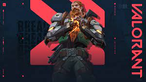

Valorant is a first-person hero shooter developed and published by Riot Games, for Microsoft Windows. First teased under the codename Project A in October 2019, the game began a closed beta period with limited access on April 7, 2020, followed by an official release on June 2, 2020. The development of the game started in 2014. Valorant takes inspiration from the Counter-Strike series of tactical shooters, borrowing several mechanics such as the buy menu, spray patterns, and inaccuracy while moving.
| The genius of Germany. Killjoy secures the battlefield with ease using her arsenal of inventions. If the damage from her gear doesn't stop her enemies, her robots' debuff will help make short work of them. | Forged in the heart of Mexico, Reyna dominates single combat, popping off with each kill she scores. Her capability is only limited by her raw skill, making her highly dependent on performance. | ||
| The American chemist, Viper deploys an array of poisonous chemical devices to control the battlefield and cripple the enemy's vision. If the toxins don't kill her prey, her mind games surely will. | Breach, the bionic Swede, fires powerful, targeted kinetic blasts to aggressively clear a path through enemy ground. The damage and disruption he inflicts ensures no fight is ever fair. |  | |
| Turkish bounty hunter, Fade, unleashes the power of raw nightmares to seize enemy secrets. Attuned with terror itself, she hunts targets and reveals their deepest fears—before crushing them in the dark. |
|
The Moroccan information broker, Cypher is a one-man surveillance network who keeps tabs on the enemy's every move. No secret is safe. No maneuver goes unseen. Cypher is always watching. |
|